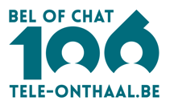
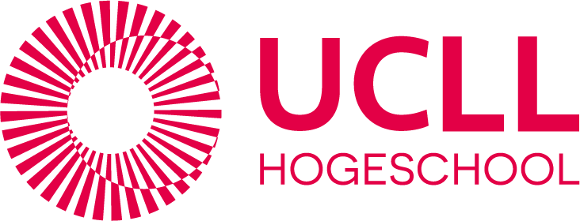
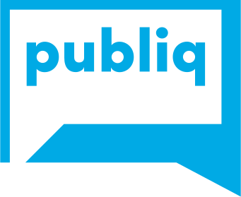
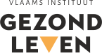
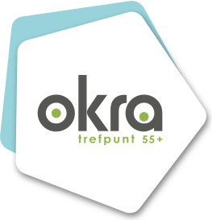
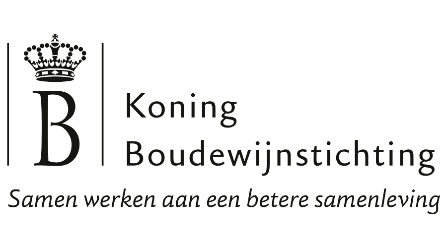
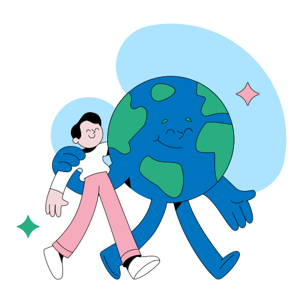
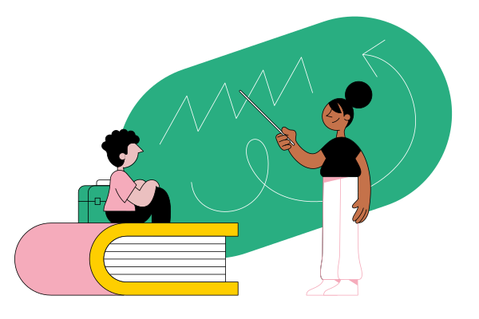

Al meer dan twintig jaar aan het werk voor onder andere






Geen grote IT-projecten, wel de processen waar je mensen elke week tijd aan verliezen. Een greep uit wat we tegenkomen:
Vrijwilligers of leden dienen kosten in via Excel, elk op een eigen manier. Iemand controleert alles met de hand en telt bedragen na. Eén formulier dat zichzelf controleert houdt fouten tegen voor ze vertrekken. Wat binnenkomt, klopt.
Stukken verzamelen bij collega's, deadlines bewaken, dezelfde cijfers in drie sjablonen overtikken. Eén plek waar het dossier zichzelf opbouwt doorheen het jaar, zodat de deadline geen sprint meer is.
Van inschrijfformulier tot bevestigingsmail tot deelnemerslijst tot facturatie: vier systemen, vier keer overtikken. Eén doorlopende flow, met een mens aan het stuur waar dat telt.
Stageplaatsen verdelen, deelnemers indelen in groepen, lokalen toewijzen. Puzzels die nu dagen kosten en discussies opleveren. Tools die de puzzel leggen volgens jullie regels, en laten zien waarom elke keuze gemaakt is.
Attesten, facturen, aanvragen die binnenkomen als pdf of foto. Software doet het sorteerwerk: classificeren, gegevens eruit halen en bij de juiste persoon krijgen. Een mens bevestigt, de stapel verdwijnt.
Jullie boekhoudpakket, ledenbestand en kalender praten niet met elkaar, dus doet een collega het. Wij bouwen de bruggen, zodat gegevens één keer worden ingevoerd en overal kloppen.
Staat jouw proces er niet tussen? Stuur ons gerust je rommeligste Excel. We vertellen je eerlijk of het oplosbaar is.
Niemand laat zo'n proces uit luiheid aanmodderen. Het bleef liggen omdat het niet anders kon. Standaardsoftware past nooit helemaal: elke werking heeft regels en uitzonderingen waar geen pakket rekening mee houdt. En maatwerk liet je bouwen voor je kernsystemen, niet voor de onkostennota's van vrijwilligers. Wie er toch ooit een offerte voor vroeg, schrok van het bedrag en deed de lade weer dicht.
Dus werd het Excel. Jarenlang was dat gewoon de redelijke keuze, en al die jaren heeft iemand in jouw organisatie dat met veel geduld gedragen.
Software bouwen is de voorbije jaren fundamenteel versneld. Met AI als krachtig gereedschap in de werkplaats doen onze makers nu in dagen wat vroeger maanden vroeg. Voor jouw kleine processen betekent dat iets belangrijks: voor het eerst is software op maat ook daar haalbaar. De categorie "te klein om op te lossen" bestaat niet meer.
Het moeilijkste deel is daarmee niet verdwenen, en daar maken wij het verschil: jouw proces écht begrijpen. De regel die nergens gedocumenteerd staat. De reden waarom kolom F soms leeg is. Daarom beginnen we nooit bij technologie, altijd bij de mensen die het proces elke dag dragen. Hoe meer uitzonderingen jouw proces heeft, hoe meer het ons werk is.
En elk uur dat zo vrijkomt, gaat terug naar waar je mensen voor gekozen hebben: leden, bezoekers, studenten, burgers.
Bij de Centrale Toezichtsraad voor het Gevangeniswezen dienen 500 vrijwilligers in 37 commissies elk kwartaal hun zitpenningen en reiskosten in via Excel. Elk op een eigen manier, dus controleerde een jurist alles met de hand.
Op één workshopdag brachten we samen het hele proces in kaart, en stond er 's avonds een werkend prototype van een formulier dat fouten tegenhoudt voor ze vertrekken.
Lees de hele caseGeen maandenlange analysefase en geen rapport dat in een lade belandt. We tonen liever dan we beloven, vanaf de eerste dag.
Vooraf vragen we je formulieren, regels en voorbeelden op. Op de workshopdag brengen we met de mensen die het proces dragen de hele flow in kaart: elke stap, elke uitzondering. Vaak voor de organisatie zelf al een eyeopener.
's Namiddags tonen we een eerste werkende versie, met jullie regels erin. Klikbaar, testbaar, echt. Wat niet klopt, komt nu boven, niet na drie maanden bouwen.
We testen bij de echte eindgebruikers: de vrijwilliger van 67 die alles op een tablet doet, de collega die het formulier elke week verwerkt. Toegankelijkheid is een vertrekpunt, geen extraatje.
Live. Gebouwd. Met documentatie en opleiding, en de code, data en kennis zijn van jullie. Daarna kiezen jullie: op eigen kracht verder, of met ons als vaste partner in de buurt. Allebei prima.
Wat het wordt? Meestal een slim formulier, een verdeel- of planningstool, een documentstroom, een koppeling tussen bestaande systemen of een helder dashboard. Maar eerlijk: dat bepalen we samen op die eerste dag, niet in een brochure.
Overal lees je over AI-agents die organisaties zullen overnemen. Dat is ons verhaal niet. Wij zoeken, zoals altijd, het evenwicht tussen mensen en technologie. AI heeft bij ons twee duidelijke rollen, en één duidelijke grens.
Onze makers werken met AI zoals een meubelmaker met goed gereedschap: het werk gaat sneller, maar het vakmanschap, de keuzes en de verantwoordelijkheid blijven bij de mens. Je hoeft er zelf niets van te kennen; wij spreken je taal en leggen elke keuze uit.
Een document herkennen, een mail omzetten in een geboekte zaal: daar is AI sterk in, en daar zetten we het in. Altijd met een menselijke bevestigingsstap waar het ertoe doet, altijd controleerbaar. En altijd nuchter: we gebruiken AI waar het waarde toevoegt, niet omdat het blinkt. Dat is ook voor de planeet de eerlijkste keuze.
Wie welke vergoeding krijgt, wie in welke groep komt, wat goedgekeurd wordt: dat beslist geen taalmodel. Dat doen jullie regels, vastgelegd in heldere logica, en jullie mensen. En nee, dit vervangt je collega's niet. Het vervangt het werk waar ze nooit voor gekozen hebben.
We werken GDPR-conform en kiezen bewust voor Europese hosting en leveranciers waar dat kan. Gevoelige gegevens verlaten jullie omgeving niet zonder doordachte reden en duidelijke afspraak.
Wat we bouwen moet werken voor élke eindgebruiker: ook wie slecht ziet, wie niet digitaal sterk is, wie alles op een telefoon doet. We testen het, we beweren het niet alleen.
Lichte, onderhoudbare software zonder toeters die niemand vroeg. Goed voor jullie budget, goed voor de planeet, en goed voor de collega die het over vijf jaar moet beheren.

Bouw je aan een groter platform, een ledenomgeving of een digitaal product voor je publiek? Dan is onze digital product studio je gids. Deze pagina gaat over de kleinere processen daaronder, die nooit aan de beurt kwamen. Allebei met dezelfde mensen, dezelfde aanpak en dezelfde liefde gebouwd.
Naar de product studioLiever eerst voelen of dit iets voor jullie is? Dan beginnen we met één dag samenwerken.
Een blueprint van je proces, een werkend prototype, en een eerlijk advies. Ook als dat advies is dat je dit niet moet laten bouwen. Daarna beslis je zelf hoe het verder gaat.
Plan een eerste gesprek
Van 500 Excels per kwartaal naar één formulier dat fouten tegenhoudt voor ze vertrekken.
Meer lezen →Huisartsen in opleiding slim verdelen over stageplaatsen en intervisiegroepen. Volgt binnenkort.
"Hier komt de testimonial van een klant, zodra die er is. Bijvoorbeeld over de workshopdag bij CTRG."Naam, organisatie
Vertel het ons, of beter nog: stuur ons je rommeligste Excel. We vertellen je eerlijk of het oplosbaar is, en grote kans dat we het al eens gezien hebben. Een positieve impact maken we het liefst samen.
Laten we samenwerken